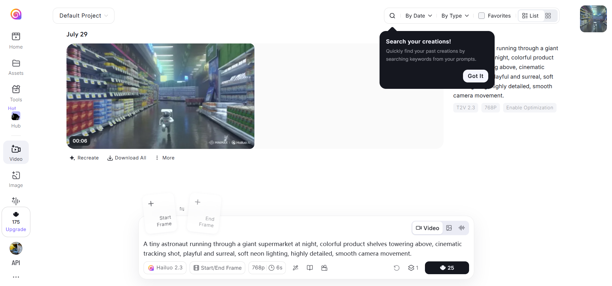

Capture
Collect customer messages, behavior, platform rules, and product observations.
I qualify overseas demand, turn scattered evidence into operating rules, and translate product observations into measurable growth actions.
Collect customer messages, behavior, platform rules, and product observations.
Separate high-intent signals from noise using explicit criteria.
Assign ownership, required fields, and the next action.
Track outcomes and update the workflow when evidence changes.
The common thread is simple: turn judgment into a system that a team can reuse.
02 / 12For a building materials marketplace in Sharjah, I handled inquiries from TikTok, Instagram, and Facebook, then rebuilt the initial screening logic for a new project.
daily inquiries observed during the operating period
daily leads with basic needs confirmed and moved into follow-up
customer groups routed to sales or scheduled for a visit each day
screening rules plus CRM fields for ownership and next actions
Ranges are based on my work records and daily observations. They do not claim full-funnel revenue attribution.
04 / 12I reviewed recent discussions about buying, selling, and licensing AI-generated content, then tested the narrative against platform rules and counterexamples.
Scope: 14 core Reddit threads from a broader cross-platform scan. The sample supports hypothesis formation, not market sizing or proof of product-market fit.
Where does AI content solve a real delivery problem, and where is supply only creating noise?
Cluster discussions by transaction intent, delivery friction, trust, rights, and acquisition risk.
Buyers value usable outcomes more than generation volume. Quality assurance, rights, and specification remain costly.
High engagement around generic AI products does not demonstrate repeat purchase or willingness to pay.
Validate a narrow, standardized deliverable with buyer interviews, paid trials, and repeat-order data.
Test offers with a clear specification, human quality control, and explicit usage rights.
Use communities to discover language, objections, and public demand signals while keeping human review.
Conversation volume alone cannot prove transactions, retention, or a defensible market.
Good research reduces the number of things a team should do next.
06 / 12I completed one text-to-video and one image-to-video task, recording output quality, credits, wait feedback, background processing, and the path to download or share.

Free access lowered trial friction. Visually surprising, branded outputs travelled through X, Reddit, and TikTok, letting new users discover the product through a result rather than an advertisement.
Strength: fast awareness and product proof. Risk: curiosity may not become repeat use or paid conversion.
08 / 12Start with short-form creators turning a still image into a six-second hook.
Give selected creators the same weekly brief, prompt templates, and publishing deadline.
Publish comparable results against alternatives, using motion quality, time, and cost.
Track generation success, downloads, shares, seven-day return, and paid conversion.
The goal is not more first generations. It is more creators who return with a second real job.
09 / 12Hailuo AI's early overseas growth came from making high-quality text-to-video generation easy to try. Free access reduced adoption friction, while users shared surprising, watermarked results across X, Reddit and TikTok. This turned product output into distribution: people discovered Hailuo through a video, not an advertisement.
I would have narrowed the first campaign to one repeatable use case, short-form creators turning a still image into a six-second hook, rather than attracting every curious AI user. I would recruit a small creator cohort, give them the same weekly brief and prompt templates, and publish side-by-side results against competing tools. The funnel would track generated videos, successful downloads, shares, seven-day return rate and paid conversion.
I would also replace uncertain queueing with an estimated completion time and email notification. Hailuo proved that spectacle can acquire users; I would focus earlier on whether creators could build a reliable, repeatable workflow around it.
Answer to: What did they do first, and what would you have done differently?
10 / 12UAE operations show how I defined useful lead information, routed ownership, and maintained next actions across teams.
Reddit brief shows how I separate engagement, intent, constraints, and counterevidence before recommending a market action.
Hailuo analysis connects product experience with social distribution, retention, conversion, and a testable campaign design.
This is how I would approach cold-start products: find the signal, define the workflow, and keep the commercial outcome visible.
11 / 12I am interested in overseas market work where research, content, customer signals, and AI workflows connect to measurable business outcomes.
DARIA YU · INTERNATIONAL BUSINESS